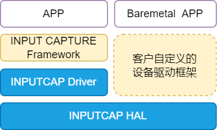

设计说明
21 Nov 2024
Read time: 7 minute(s)
源码说明
源代码位于 bsp/artinchip/：
-
bsp/artinchip/drv/inputcap/drv_inputcap.c，CAP Driver 层实现
-
bsp/artinchip/hal/inputcap/hal_inputcap.c，CAP 模块的 HAL 层实现
-
bsp/artinchip/include/hal/hal_inputcap.h，CAP 模块的 HAL 层接口头文件
模块架构
CAP 驱动 Driver 层采用 RT-Thread 的 INPUT CAPTURE 设备驱动框架。HAL 层也可以支持 Baremetal 方式或配合自定义的设备驱动框架进行使用。

关键流程设计
初始化流程
CAP 驱动的初始化接口通过 INIT_DEVICE_EXPORT(drv_inputcap_init) 完成，主要是通过调用
INPUT CAPTURE 子系统的接口 rt_device_inputcapture_register() 注册一个 CAP 设备。
CAP 控制器的配置过程，主要步骤有：
-
初始化 CAP 模块的 clk
-
使能 CAP 指定通道的 clk
-
设置 CAP 捕捉事件
-
使能 CAP 的中断或 DMA
-
启动 CAP 计数
数据结构设计
struct aic_inputcap_pdata
属于 HAL 层接口，记录每一个 CAP
通道的捕捉数据信息：
struct aic_inputcap_pdata {
u8 id;
u8 isr_event;
enum inputcap_polarity event0_pol;
enum inputcap_polarity event1_pol;
u32 cur_cnt;
u32 last_cnt;
struct aic_inputcap_transfer_info t_info0;
struct aic_inputcap_transfer_info t_info1;
};
struct aic_inputcap
属于 Driver 层接口，记录一个 CAP
设备的配置信息：
struct aic_inputcap {
struct rt_inputcapture_device rtdev;
struct aic_inputcap_pdata *data;
};Driver 层接口设计
以下接口是 INPUT CAPTURE
设备驱动框架的标准接口。
struct rt_inputcapture_ops
{
rt_err_t (*init)(struct rt_inputcapture_device *inputcapture);
rt_err_t (*open)(struct rt_inputcapture_device *inputcapture);
rt_err_t (*close)(struct rt_inputcapture_device *inputcapture);
rt_err_t (*get_pulsewidth)(struct rt_inputcapture_device *inputcapture, rt_uint32_t *pulsewidth_us);
#if defined (AIC_INPUTCAP_DRV) && defined (AIC_DMA_DRV)
rt_err_t (*set_buf)(struct rt_inputcapture_device *inputcapture, struct rt_inputcapture_fifo_buf *ptr);
#endif
};其中 (*set_buf) 为 CAP 拓展的接口，用于 DMA 模式。
| 函数原型 | static rt_err_t aic_inputcap_init(struct rt_inputcapture_device *inputcapture) |
|---|---|
| 功能说明 | 无 |
| 参数定义 |
inputcapture - 指向 rt_inputcapture_device 设备的指针
|
| 返回值 | 0，成功；<0，失败 |
| 注意事项 | - |
| 函数原型 | static rt_err_t aic_inputcap_open(struct rt_inputcapture_device *inputcapture) |
|---|---|
| 功能说明 | 并配置使能 CAP |
| 参数定义 |
inputcapture - 指向 rt_inputcapture_device 设备的指针
|
| 返回值 | 0，成功；<0，失败 |
| 注意事项 | - |
| 函数原型 | static rt_err_t aic_inputcap_close(struct rt_inputcapture_device *inputcapture) |
|---|---|
| 功能说明 | 关闭 CAP |
| 参数定义 |
inputcapture - 指向 rt_inputcapture_device 设备的指针
|
| 返回值 | 0，成功；<0，失败 |
| 注意事项 | - |
| 函数原型 | static rt_err_t aic_inputcap_get_pulsewidth(struct rt_inputcapture_device *inputcapture, rt_uint32_t *pulsewidth_us) |
|---|---|
| 功能说明 | 计算脉冲间隔时间 |
| 参数定义 |
inputcapture - 指向 rt_inputcapture_device 设备的指针
pulsewidth_us - RT-Thread 回调参数脉冲间隔变量的指针
|
| 返回值 | 0，成功；<0，失败 |
| 注意事项 | - |
| 函数原型 | static rt_err_t aic_inputcap_setbuf(struct rt_inputcapture_device *inputcapture, struct rt_inputcapture_fifo_buf *ptr) |
|---|---|
| 功能说明 | 设置 DMA 的 BUFF 地址 |
| 参数定义 |
inputcapture - 指向 rt_inputcapture_device 设备的指针
ptr - 指向 rt_inputcapture_fifo_buf FIFO 地址、长度信息
|
| 返回值 | 0，成功；<0，失败 |
| 注意事项 | 当使用 DMA 模式才需要设置 |
HAL 层接口设计
HAL 层的函数接口声明存放在 hal_cap.h
中，主要接口有：
void hal_inputcap_evnt_en(u32 i, u32 event, u32 enable);
void hal_inputcap_pol_set(u32 i, u32 event, enum inputcap_polarity event_pol);
void hal_inputcap_cnt_en(u32 i, u32 enable);
u32 hal_inputcap_get_cnt(u32 i);
void hal_inputcap_set_fifo(u32 i, u32 fifo, u32 enable);
u32 hal_inputcap_int_stat(u32 i);
void hal_inputcap_int_clr(u32 i, u32 mask);
u32 hal_inputcap_get_event_fifo(u32 i, u32 fifo);
void hal_inputcap_fifo_flush(u32 i, u32 fifo);
#ifdef AIC_DMA_DRV
void hal_inputcap_dma_config(struct aic_inputcap_pdata *chan, u32 event,
dma_async_callback callback, void *callback_param);
#endifDemo
本 Demo 是 test_inputcap
的部分源码（bsp/examples/test-inputcap/test_inputcap.c）：
#define WATER_MARK 64 #ifdef AIC_DMA_DRV #define INPUTCAP_CLK_RATE 48000000 rt_uint32_t data_buf0[WATER_MARK] __attribute__((aligned(32))) = {0}; rt_uint32_t data_buf1[WATER_MARK] __attribute__((aligned(32))) = {0}; rt_uint8_t event0_flag = 0; rt_uint8_t event1_flag = 0; #endif /* callback function */ static rt_err_t inputcap_cb(rt_device_t dev, rt_size_t size) { #ifdef AIC_DMA_DRV rt_uint8_t *p = dev->user_data; if ((rt_uint32_t)*p == 0) event0_flag = 1; else event1_flag = 1; #ifdef ULOG_USING_ISR_LOG rt_uint32_t temp_cnt; if ((rt_uint32_t)*p == 0) { for (int i = 0; i < WATER_MARK - 1; i++) { if (data_buf0[i + 1] > data_buf0[i]) temp_cnt = data_buf0[i + 1] - data_buf0[i]; else temp_cnt = data_buf0[i + 1] + ((0xFFFFFFFF - data_buf0[i]) + 1); rt_kprintf("%s event%d: pulsewidth:%d us\n", &dev->parent.name, (rt_uint32_t)*p, temp_cnt / (INPUTCAP_CLK_RATE / 1000000)); } } else { for (int i = 0; i < WATER_MARK - 1; i++) { if (data_buf1[i + 1] > data_buf1[i]) temp_cnt = data_buf1[i + 1] - data_buf1[i]; else temp_cnt = data_buf1[i + 1] + ((0xFFFFFFFF - data_buf1[i]) + 1); rt_kprintf("%s event%d: pulsewidth:%d us\n", &dev->parent.name, (rt_uint32_t)*p, temp_cnt / (INPUTCAP_CLK_RATE / 1000000)); } } #endif #else struct rt_inputcapture_data inputcap_data[WATER_MARK]; rt_device_read(dev, 0, (void *)inputcap_data, size); #ifdef ULOG_USING_ISR_LOG for (int i = 0; i < size; i++) rt_kprintf("%s: pulsewidth:%d us\n", &dev->parent.name, inputcap_data[i].pulsewidth_us); #endif #endif return RT_EOK; } int test_inputcap(int argc, char **argv) { rt_uint32_t watermark = WATER_MARK; rt_device_t inputcap_dev = RT_NULL; char device_name[8] = {"incap"}; int ret; if (argc != 2) { rt_kprintf("Usage: test_inputcap 0\n"); return -RT_EINVAL; } strcat(device_name, argv[1]); inputcap_dev = rt_device_find(device_name); if (inputcap_dev == RT_NULL) { rt_kprintf("Can't find %s device!\n", device_name); return -RT_EEMPTY; } #ifdef AIC_DMA_DRV struct rt_inputcapture_fifo_buf buf_para; buf_para.event0_buf = data_buf0; buf_para.event0_buflen = sizeof(data_buf0); buf_para.event1_buf = data_buf1; buf_para.event1_buflen = sizeof(data_buf1); ret = rt_device_control(inputcap_dev, INPUTCAPTURE_CMD_SET_DATA_BUF, (void *)&buf_para); if (ret != RT_EOK) { rt_kprintf("Failed to set %s device watermark!\n", device_name); return ret; } #endif ret = rt_device_control(inputcap_dev, INPUTCAPTURE_CMD_SET_WATERMARK, &watermark); if (ret != RT_EOK) { rt_kprintf("Failed to set %s device watermark!\n", device_name); return ret; } /* set callback function */ rt_device_set_rx_indicate(inputcap_dev, inputcap_cb); ret = rt_device_open(inputcap_dev, RT_DEVICE_OFLAG_RDWR); if (ret != RT_EOK) { rt_kprintf("Failed to open %s device!\n", device_name); return ret; } rt_kprintf("inputcap%d open.\n", atoi(argv[1])); #ifdef AIC_DMA_DRV int wait_count = 1000; while (1) { if (event0_flag == 1 && event1_flag == 1) { event0_flag = 0; event1_flag = 0; rt_device_close(inputcap_dev); break; } rt_thread_mdelay(10); wait_count--; if (wait_count == 0) { rt_kprintf("no signal input!\n"); rt_device_close(inputcap_dev); break; } } rt_kprintf("inputcap%d close.\n", atoi(argv[1])); #endif return 0; } MSH_CMD_EXPORT_ALIAS(test_inputcap, test_inputcap, Test the inputcap);